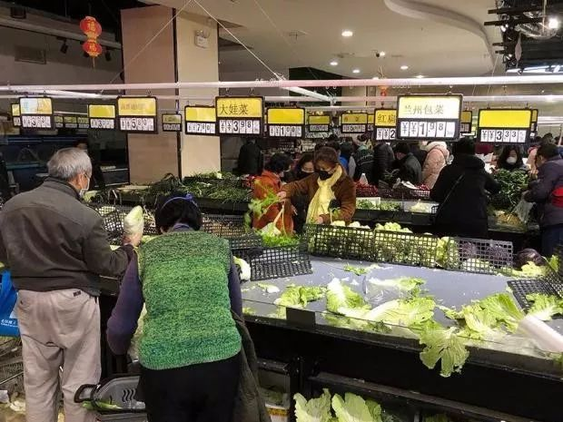
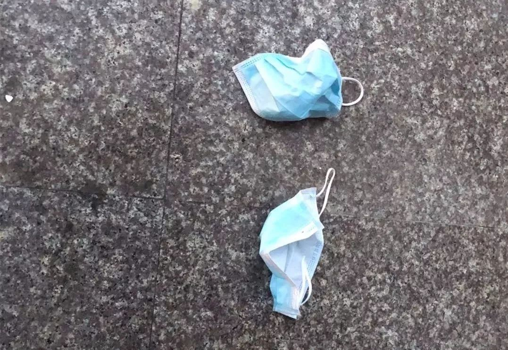

2020武汉除夕夜：危机、亲情、祈祷 | 三明治持续更新中
原文链接 备份链接 你怀着怎样的心情，度过了2020年的大年夜？ 在得知武汉封城的新闻后，三明治紧急发起了每日书特别版《武汉日常》，邀请人在武汉和家乡在武汉的朋友，一起来用文字忠实记录他们在这个特殊时期的生活日常。 招募一经发出，就有近百 …
记者/佟晓宇 韩谦 实习记者/胡琪琛 陈威敬
编辑/刘汨 图片来源/ 澎湃新闻 胡琪琛

1月23日上午，即将关闭进站口的汉口火车站
除夕夜，我们和五个还在武汉的人聊了聊，听他们讲述了自出城交通关闭之后，两天两夜所经历的种种。
每个人留下的理由都不一样，有的只是抱着“不想打搅别人”的念头，独自面对空荡荡的街道；有的是因为岗位需要，不想被看成“逃兵”；还有的刚刚回到故乡，一点都不后悔，认为“至少有爱的人在旁边”。
当然也有些人，无论出城交通是否关闭，都无法离开。家人已经躺在发热门诊几天几夜，因为无法确诊，迟迟不能进入隔离病房。相比来去的自由，他们更想得到一个安全有效的就医环境。
在这座城市关闭了大多数出口之后，紧随而至的春节，让留在这里的人们不管怎样还是想得到一声祝福，不说快乐，但求健康、平安。

武汉出城方向高速出现拥堵

超市里排起长队抢购绿叶菜
方亦原本就没打算离开武汉，但当23号早上看到主要出城交通方式被关闭的消息时，他还是有些慌了。
手机里的那条短信告诉方亦，这座城市通往外界的公共交通出口，即将在上午10点关闭。紧接着，新闻又推送了一条消息，武汉市新型冠状病毒感染的肺炎患者，人数再次上升。
在这之前，方亦就读的学校已经有了确诊病例，方亦没有住在为留校学生统一安排的宿舍里，而是选择和女朋友在外面租了间房子。22号那天，他退掉了回恩施老家的火车票，“这时候不该出去打搅别人，就在这自行隔离吧。”
“封城”的消息公布后，辅导员让方亦想办法离开武汉城区，先去周边的地方，然后再转道离开。方亦也动了“走”的心思，他查了查去往武汉周边城市的车票，全卖完了。
既然走不了，还得为后面的生活做准备。早上八点多，方亦去租住地附近的超市买菜，距离出城交通关闭还有两个小时，每个收银台前都排起了长队。最受欢迎的是绿叶菜，货架很快空了，方亦身旁的人装满一车结了账后，回来又推了一车。方亦自己只挑了耐放的土豆和花椰菜，还囤了些泡面。
除夕的晚上，方亦待在屋里哪也没去，他说自己独惯了，没有特意和家里联络。但他还是按老家的习惯买好了一袋汤圆，准备初一煮给自己吃。

武汉超市里选购蔬菜的人们
隔着口罩，闻到消毒水的味道
康康的妹妹是一名护士，工作的医院也负责收治发热病人，妹妹要一直上班到除夕。康康和父母因此没有回陕西老家，陪妹妹一起留在武汉过年。
母亲看到视频里康康妹妹穿着防护服的样子，背地里抹了眼泪，转过头又跟妹妹说：“没关系，我们都支持你，还有那么多人在一线呢。”
康康的父母在武汉开了家水果超市，几天前已经不敢出去进货了。他们停止了门店的对外营业，改成了在线上销售。他们在店门口放了个消毒过的箱子，水果装在里面，外卖员直接从箱子上取货。
23号早上5点40分，妹妹起床准备去医院上班，告诉了康康要出城交通关闭的消息。天亮以后，康康和母亲去超市买菜，同样看到了抢购的一幕，“菜基本上也是被哄抢的状态，人很多，短的队要排半个小时，长的要一个小时”。
对于关闭出城交通的决定，康康表示理解，但她觉得消息来得有些突然，让人们没有适应的过程，像这样一窝蜂到了超市里，可能会造成更大人群聚集的风险。隔着口罩，康康闻到了消毒水的味道，也感受到了紧张，“所有人都想赶快买完东西，赶紧离开这里。”
她碰见一个小女孩，好像是滞留在了武汉，在货柜旁急匆匆和家里人视频，请教怎么做饭，“不知道排骨怎么烧，只会烧素菜。”
在超市里，康康还遇到了两个没戴口罩的人，她很生气，上去质问，对方一脸茫然地看着她。回去的路上，康康也看到了还有零星没戴口罩的人，大都是上了年纪的。
康康生气的原因在于，她认为所有人都该意识到戴口罩的重要。在康康学校附近的一个药店，买口罩的队伍排了有二三十个人，她准备在网上再买些口罩，选了武汉的地址后，显示着：“本地区不配送”。
连续两天，康康都能收到很多亲友的信息，除了春节的问候，还有一层对她身处武汉特殊的关心。康康不大喜欢这种感觉，自己好像被当成了另类看待，“这让我压力更大了。”
她尝试静下来看会书，但是总忍不住想关注最新的消息，朋友半开玩笑似的关心再次出现，“你现在别想什么学习的事了，吃好喝好，把免疫系统和循环系统调节好，就是最大的贡献”。
康康家连续好几天一直都在吃素，“不敢吃肉，心里膈应”，除夕的年夜饭也没有肉。
赶上妹妹不值班，妈妈包了饺子。吃饭时妈妈说，明年一定好好过个年。康康偷偷许了愿望，“一切都赶紧好起来，可以自由自在的，想吃什么吃什么，想见谁就见谁”。

一些加油站开始排队
下月产检的医院，在地图上被标红
1月23号上午，胡杨也加入到了抢购的人潮中。相比其他人，正在孕期的胡杨，在吃喝上更不能马虎。
胡杨的下次产检在2月28号，是一次排畸检查，如果这段时间不能检查，以后就查不出来了。她有些担心，产检医院所在的位置患病人数不少，在一张统计图上，那个区域被标成了红色。
胡杨听邻居说，同住的小区也有人感染了新型肺炎，她不能确定真假，每天大量的信息通过网络涌到她眼前，“现在已经分不清楚了什么是谣言，什么是真相了”。不管外面的情势如何，胡杨家里已经立起了一些规矩：出门要带两层口罩，回来用洗手液洗手、淡盐水漱口，衣服裤子全挂在阳台上吹……
胡杨和老公都是机场一线工作人员，往年的春节，两人大多在岗位上度过，每天的睡眠时间有限。今年除夕两人也都排了班，因为怀孕，胡杨已经在家里休息了五天，家人担心她和孩子，每天都催她接着请假。
运送物资的航班还要在武汉落地，空域也有航班经过。胡杨离不开岗位，即便为了孩子，她也不好意思跟领导开口，“大家都在上班，我不想一个人当逃兵。”

空空荡荡的街道
穿上一次性塑料雨衣，当防护服
除夕下午5点多，一直陪在在丈夫身边的刘萍走出了医院，去附近唯一还开着的饭馆吃了碗拉面，在这之前，一天里她只吃了一根黄瓜。
吃完饭，刘萍又回到住处给丈夫煮了颗鸡蛋，还带了些面包去医院。丈夫躺在病床上几天，只吃些干粮，刘萍担心他营养跟不上。
前一天听到关闭出城交通的消息，刘萍没什么别的想法，她本来也不可能离开这里。丈夫王强在1月14日开始发烧，17日在武汉一家三甲医院拍胸片及CT，确诊为病毒性肺炎。为了防止感染家里的老人和小孩，夫妻俩开始在外租房。在打了三天点滴后，王强仍然高烧38℃多，咳出的痰里还带着血。21日，拨打120急救电话后，王强被送到一家发热门诊定点医院，在次日上午10点多住进了急诊病房。
关闭出城交通后，刘萍唯一担心的是物资紧缺，她去附近超市买了些燕麦片、面包、泡面，还花150元买到了100个医用口罩，以及超市里的最后三件一次性塑料雨衣。她觉得，没有防护服，穿着雨衣总比没有任何隔离要强。
在刘萍提供的医院视频内，急诊室内病人未做任何隔离措施，陪护家属大多只佩戴一次性医用口罩。急诊室走廊的椅子上，坐满了输液的患者，再往前走一些，便是门诊大厅。
刘萍问过医生，丈夫什么时候能进入隔离病房，答复是，目前还在腾床。王强至今也未能确诊为此次的新型肺炎，“医生说他们没法做那个检测。”
刘萍已经10天没回家了，家里6岁的儿子和公公婆婆住在一起。在送丈夫就诊前，刘萍已经开始准备迎接春节，她早早打扫完房间，布置上了鲜花。按照往年的习惯，她还会让儿子写上一副对联贴在家里，“今年没能来得及”。
母亲和弟弟给刘萍打来电话，想过来看看她，“我不敢告诉他们我的住处，要是我被传染了，再传染给他们怎么办？”

扔在地上的口罩
刚结婚的哥哥，没有带嫂子回来
整个寒假，周好一直在北京实习，武汉关闭出城交通的前一天，她回到了武汉市郊新洲的家里。她说自己一点都不后悔，“即使真的有什么事，至少爱的人在旁边。”
周好自己家里种了菜，在一个月前也已经囤够了年货。按照以往的习俗，这一定是一个热闹的春节。除夕下午，爸爸就会带着周好和弟弟去贴对联、挂灯笼。零点过后，必须挨家挨户上门拜年，越准时就越有诚意。之后，整个家族看着春晚、吃着年夜饭，十几个人、十几道菜，周好和弟弟是家族里最小的，围着饭桌能收到一圈红包。
但今年除夕，这些情景都没出现，刚结婚的哥哥也没有带嫂子回来。从省内其它地方回家后，周好的表姐一直在洗澡，也明确说，不会来家里吃饭了。周好定在初五的同学聚会同样泡汤了，听到武汉关闭出城交通的消息，一些在外地的同学立刻办理了退票。
周好的爸爸发了一条朋友圈，告知亲友今年不去拜年，也希望大家不要到家里来拜年了。周好把这条朋友圈发给了同学，很多人都跟着转发。
除夕傍晚的时候，周好出门看了看，街上没什么人，除了一家香纸店，大多店铺都关了门。在路边，周好看见，几个用过的口罩被丢在了地上。
（文中受访者均为化名。图片来自澎湃新闻）
【反侵权公告】本文由北京青年报与腾讯新闻联合出品，未经授权，不得转载。

我与新型冠状病毒搏斗的22天 | 深度对话****

“来自伊朗监狱的长电话”背后 | 深度报道

西宁公交车坠陷调查：有同一地点连续塌陷三次 | 深度报道****


原文链接 备份链接 你怀着怎样的心情，度过了2020年的大年夜？ 在得知武汉封城的新闻后，三明治紧急发起了每日书特别版《武汉日常》，邀请人在武汉和家乡在武汉的朋友，一起来用文字忠实记录他们在这个特殊时期的生活日常。 招募一经发出，就有近百 …
原文链接 备份链接 界面新闻记者 刘海川摄 记者 | 刘海川 王健 杨舒鸿吉 编辑 | 1 编者按：这是武汉三个场景下除夕夜的故事。透过他们，我们看见武汉的局部细节，看见平凡市民们的焦虑，疲惫，坚强和希望。新的一年已经到来，愿武汉与我 …
原文链接 备份链接 【编者按】首先，祝各位新年安康！ 我们的前方记者正在采访报道新型肺炎疫情，但我们知道，也许你们在更前方。这里，是一位武汉的年轻妈妈除夕发来的日志。中国青年报社正在公开征集原创文字、图片、视频。欢迎通过我们的全媒体平台告 …
原文链接 备份链接 作者 | 薛芳 孙宏超 相欣 安然 马关夏 李越 编辑 | 康晓 出品｜深网·腾讯小满工作室 欢迎下载腾讯新闻APP，阅读更多优质资讯 平平安安就是年。 突袭而至的新病毒能阻止很多中国人在这个春节里团聚，但没有什么能阻 …
原文链接 备份链接 作者 | 王晓 出品 | 棱镜·腾讯小满工作室 欢迎下载腾讯新闻APP，阅读更多优质资讯 对于湖北人民来说，2020年的这个除夕夜太不平常了。 “药店大姐告诉我们，口罩绝不涨价，不发国难财，而且告知我们第二天早7点开 …